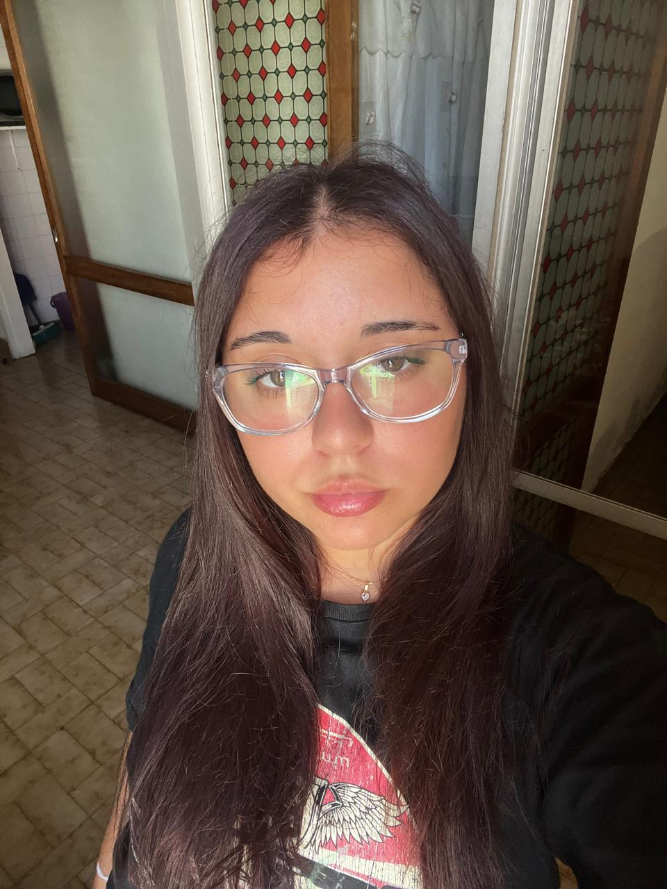

Bienvenidos a la aventura de Kung fu Panda



Martina Hernandez es una estudiante de Licenciatura en Diseño Multimedial en la UNLP. Anteriormente estudió Licenciatura en Ciencias Biológicas. Ama dibujar, disfruta aprender a diseñar y su pasatiempo favorito es jugar en la pc.
Estas fueron las tecnologias utilizadas para realizar los trabajos prácticos de la materia Programación para medios interactivos orientada a las tecnologías web.